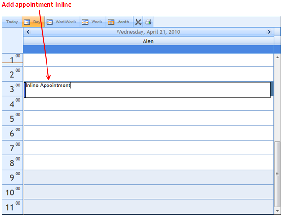
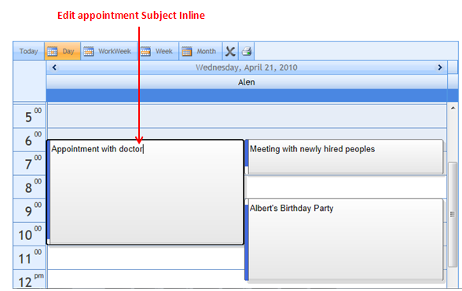

Introduction
This feature enables you to add and edit appointments inline, without opening the Add/Edit Dialog.
Appointments added inline will get automatically get the start and end time from the selected work cell. This feature allows you to add/edit appointments with ease.
Use Case Scenario
This feature allows you to add appointments quickly without having to go through the Add/Edit Dialog.
You can edit the subject of appointments by just clicking over the appointment’s subject, and saving the changes by pressing the ENTER key.
Inline appointments hold a default ReminderValue of 15 minutes before the appointments start. This allows you to have reminders without you manually setting them.
Feature Summary
To add a new appointment:
Using this feature, you would just have to select the required work cell and press the ENTER key.
This will enable you to add a subject for the appointment in question. You will be able to save this appointment by pressing the ENTER key again.
|

To edit an appointment inline
Editing an appointment would require you to select a specific appointment, select its subject by clicking on it, making the necessary edit, and then pressing the ENTER key.

Figure 83: Editing appointments inline
This makes editing and adding appointments much easier than having to go through the dialog box every time.
Property to enable inline appointments
|
Property |
Description |
Type |
Data Type |
Dependency |
|
AllowInline |
Denotes the Inline Add/Edit Appointment |
Server-Side |
Boolean |
NA |
 Enabling Inline appointments
Enabling Inline appointments